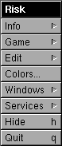
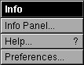
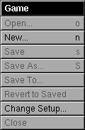
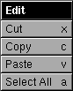
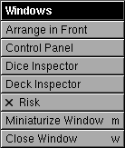
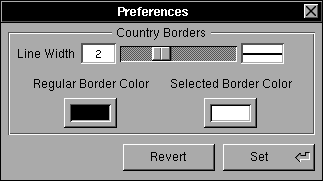
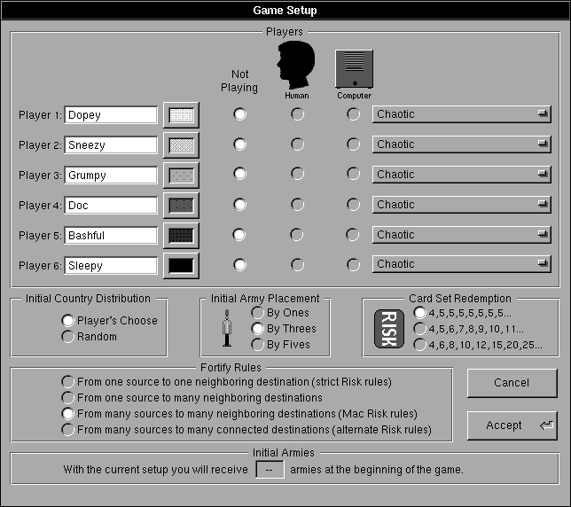
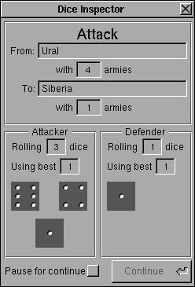

Risk
Menu Interface Help
This section of the help deals with how to play Risk on the Next. It details the user interface of the menus. See the file PlayInterface.rtfd for a discussion of the Map Window and the Control Panel.
The first thing you see when Risk starts is the Map Window and the Main Menu. The Main Menu is where you start a game and change the settings of the game in progress.
    
Risk's menus
The Risk Menu
Colors...: This command puts the standard Next color panel on screen. The only places in this version where you can use color are the Game Setup Panel and the Preferences Panel (both discussed below).
Services: This menu command brings up a the standard Next services menu.
Hide: Hides the application. All windows go away, but the game still runs. Any game in progress is preserved.
Quit: Quits the application. Any game in progress is abandoned.
The Info Menu
Info Panel...: Information about the application such as the version number is in the Info Panel.
Help...: The Help command asks the Workspace manager to open a browser on the Help directory. You can double click on any of the help files to have Edit open them.
Preferences...: The Preferences panel allows you to set certain application wide preferences. Risk will remember your preferences.

Preference Panel
The options you can set are:
Country border line width: Controls how thick the borders in between countries are. Type a number in the field or use the slider to set this preference. The line view on the right shows you what the line will look like on your screen.
Country border color: Whatever color is in this colorwell is the color Risk will use to draw the country borders.
Country border selected color: This color controls what color Risk draws the border of the selected country. Color screens might like to use red or something more eyecatching than white.
The changes take affect immediately. Clicking the Set button will save the changes in your defaults database so Risk will always remember. Revert will change the panel back to what is stored in your default database (or the values shown above if you haven't saved any defaults for Risk)
The two preferences available were put in because some people didn't like the border width and others wanted to be able to play with the color black and still see their borders. For best results set the two colors to be different from any of the players' colors. If there are other things you'd like to see in the Preferences panel, drop me a line.
There is another preference not in this picture. See the release notes.
The Game Menu
There are only two commands enabled in this menu in this version.
New Game...: Starts a new game. If a game is already in progress you are warned that it will be discarded for the new game. The Game Setup panel comes up and lets you choose the initial options for the new game.
Change Setup...: Allows you to change the colors and names of the players. The Game Setup panel has most of its controls disabled. You can only change the colors and names of the players.
The Game Setup Panel

Game Setup Panel
The Players box allows you to specify how many players are playing, what their names are, and whether they will be played by human beings or the computer using one of several available strategies. Two to six players can play at once and they can be any mix of humans and computer players. If all the playing players are computer players, you can abort the game at any time by pressing command-period. To choose a computer player strategy, set the radio button for the player to Computer, and choose a strategy from the popup menu for the player.
The Initial Country Distribution box allows you to choose whether the countries will be randomly divided among the players at the beginning of the game or the players will take turns choosing countries one at a time.
The Initial Army Placement box allows you to choose how many armies each player will get per round when placing your initial armies at the beginning of the game. You will always get the number of initial armies specified in the Initial Armies box before regular play begins. Some of these armies are used when countries are chosen. Those left over are given to the player to place before play begins. Players take turns placing either 1, 3, or 5 armies at a time until they have placed all the armies they were given.
The Card Set Redemption box allows you to specify how many extra armies you will receive for each card set. The first card set turned in by anyone is always worth four armies. The second and subsequent sets are awarded the amount of armies shown in the different options. The first option gives four to start, then five from then on. The second option gives four to start, then one more each time. The third option gives four to start, then 6,8,10,12,15, and after fifteen it increases by five each time.
The Fortify Rules box allows you to choose what fortifying rule to use. They are fairly self-explanatory and arranged from the strictest to the most lenient version.
The Initial Armies box is not an option. It tells you how many initial armies each player will get before play begins. This number includes the armies which will be used while the countries are being divided.
The Cancel button cancels any changes. Accept accepts the set up and if a new game is beginning starts the game. The values for all of the options except who is playing and the strategy pop up menu settings are saved in the users default database. Player names and colors as well as the various rule options are remembered. They are written to the defaults database any time the Accept button is pressed.
The Edit Menu
The Edit menu contains the standard cut, copy, paste, select all commands. They are of use in any text entry field in Risk.
The Windows Menu
Arrange in Front: Puts all Risk's windows in front of all other windows.
Control Panel: Brings the Control Panel on screen and to the front. (see below)
Dice Inspector: Brings the Dice Inspector on screen and to the front.

Dice Inspector
The Dice Inspector shows the results of the last time Risk rolled dice for an attack. It shows which country attacked, which defended, how many armies each had going in, how many dice each one rolled, how many dice were actually used, and what the rolls were. If the Pause for Continue box is checked, every time Risk rolls the dice it will wait for someone to press the Continue button before continuing. If the Pause for Continue box is unchecked, stuff can go by pretty quick in this panel. The game will move faster if this panel is not on screen at all, but some people feel that Risk cheats with the dice, so I included this as proof. The dice displayed here are always sorted biggest to smallest. The third die on the attacker side (the attacker's lowest roll) is never used by Risk.
Deck Inspector: Brings the Deck Inspector on screen and to the front. The Deck panel is to wide to show here, but it just shows the different card decks that Risk uses. It shows you the country index numbers of all the cards in every player's hand and in the deck. If you know the numbers for the countries (which wouldn't be hard to figure out), this panel can be used to your advantage. I only put it in as a debugging tool, but it's kinda fun to watch, so I left it in. Again, things will move faster with this panel offscreen.
Risk: Brings the Map Window on screen and to the front. (see below)
Miniaturize Window: Miniaturizes the frontmost window.
Close Window: Closes the frontmost window.